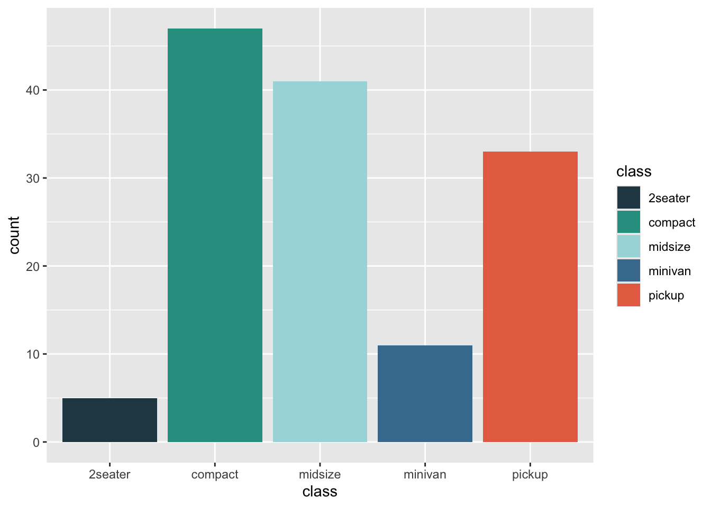
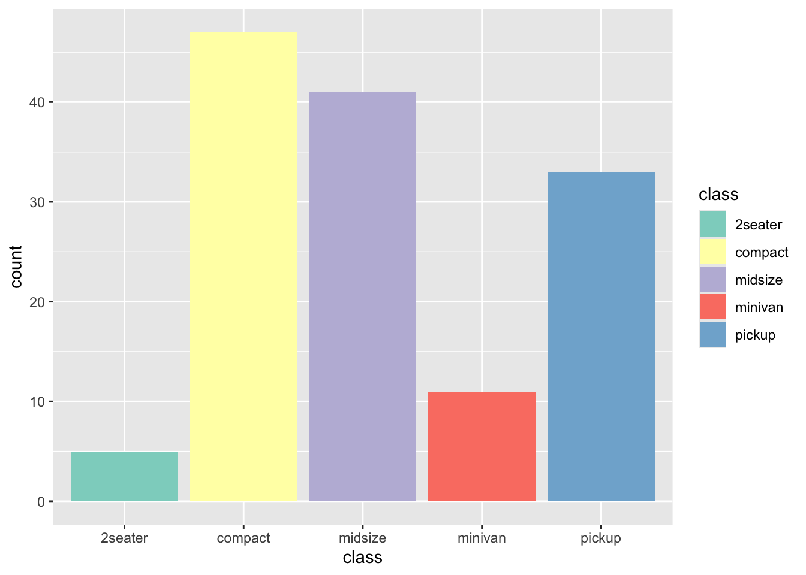
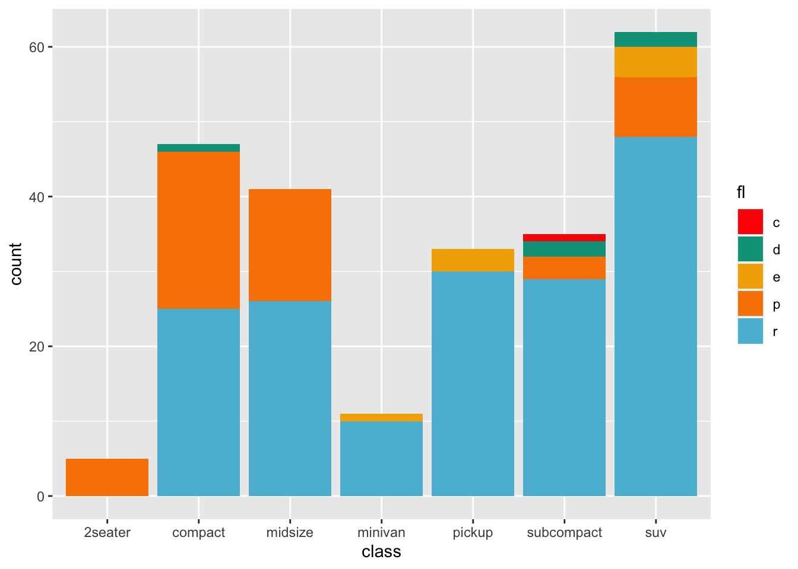
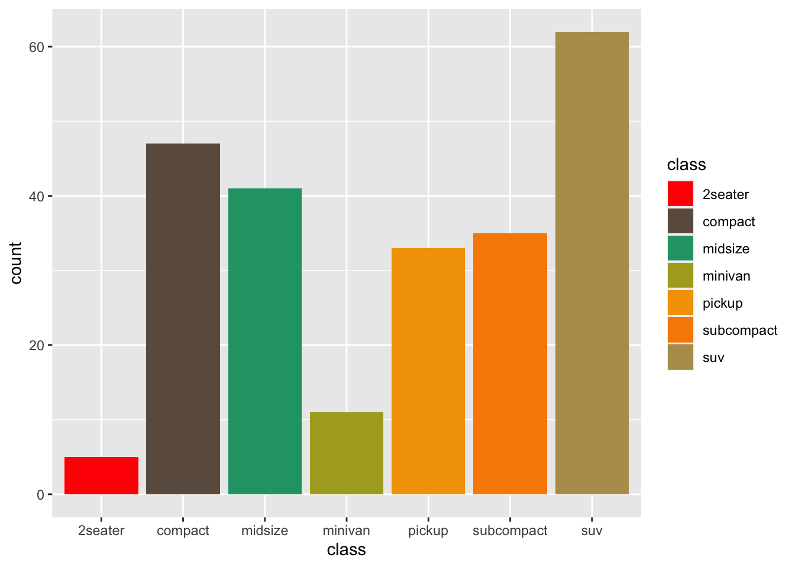

# names
options(ggplot2.discrete.fill = c("red", "blue", "green", "purple", "yellow"))
# hex codes
options(ggplot2.discrete.fill = c("#264653", "#2a9d8f", "#a8dadc", "#457b9d", "#e76f51"))
# function
options(ggplot2.discrete.fill = RColorBrewer::brewer.pal(12, "Set3"))How to globally set colour scales in ggplot2
Methods
After the post on using custom typefaces in ggplot2 (here), this time I’ll briefly discuss how to set colour scales in ggplot2 globally in an .Rmd file.
The perk of setting scales globally is that you can set the colours once at the beginning of the .Rmd file and all the plots in the file will adhere to the specified scales without the need to repeat code.
Set ggplot2 options
The most robust way of specifying global colour scales for ggplot2 plots is to set the appropriate ggplot2 options with options() at the beginning of the .Rmd file. I generally do so in the setup chunk, where I also load the tidyverse/ggplot2 with library(tidyverse).
The relevant options are:
ggplot2.discrete.colour: sets the colour scale for discrete aesthetics.ggplot2.discrete.fill: sets the fill scale for discrete aesthetics.ggplot2.continuous.colour: sets the colour scale for continuous aesthetics.ggplot2.continuous.fill: sets the fill scale for continuous aesthetics.
All these options take a character vector of colour names/codes or a function that returns such a vector (for the full documentation see here and here).
For example:
Note that the colours specified with ggplot2.discrete.* will be used only if there are as many colours in the vector/function output as the number of data levels, or more. When the number of level exceeds the number of colours, ggplot2 falls back to scale_colour_hue()/scale_fill_hue() to construct the scale.
It is possible to define multiple palettes each with a different number of colours as a list of colour names/codes vectors, and ggplot2 will pick the palette with the minimum number of colours that exceeds the number of data levels. See @ref(interp) and the third example here.
Colours in action
library(tidyverse) # or library(ggplot2)Colour name
options(ggplot2.discrete.fill = c("red", "blue", "green", "purple", "yellow"))
mpg %>%
filter(!(class %in% c("subcompact", "suv"))) %>%
ggplot(aes(class, fill = class)) +
geom_bar()
Hex value
options(ggplot2.discrete.fill = c("#264653", "#2a9d8f", "#a8dadc", "#457b9d", "#e76f51"))
mpg %>%
filter(!(class %in% c("subcompact", "suv"))) %>%
ggplot(aes(class, fill = class)) +
geom_bar()
Set3
options(ggplot2.discrete.fill = RColorBrewer::brewer.pal(12, "Set3"))
mpg %>%
filter(!(class %in% c("subcompact", "suv"))) %>%
ggplot(aes(class, fill = class)) +
geom_bar()
Palette interpolation
default_palettes <- list(
# palette with 5 colours
wesanderson::wes_palette("Darjeeling1"),
# same palette interpolated to 8 colours
grDevices::colorRampPalette(wesanderson::wes_palette("Darjeeling1"), alpha = TRUE)(8)
)
options(ggplot2.discrete.fill = default_palettes)
# 5 levels
ggplot(mpg, aes(class, fill = fl)) + geom_bar()
# 7 levels
ggplot(mpg, aes(class, fill = class)) + geom_bar()